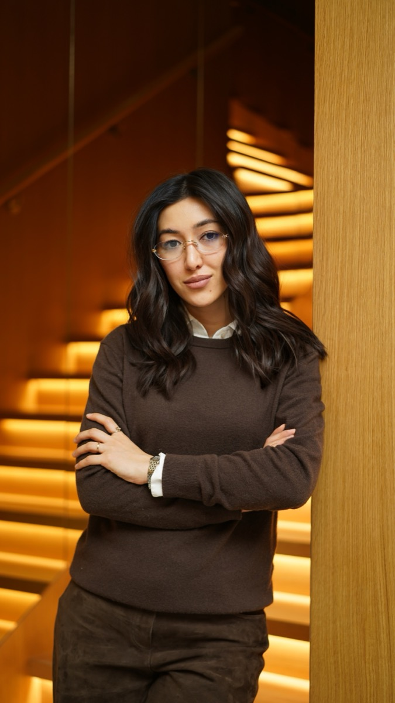

Медицинский подход к красоте и здоровью кожи. Аппаратные методики, индивидуальная программа для каждого пациента и видимый результат.

Врач-дерматовенеролог и косметолог с 6-летним опытом. Сочетаю доказательную медицину с эстетической косметологией: сначала выясняю причину состояния кожи, а затем подбираю безопасную и эффективную программу ухода и аппаратных процедур.
Работаю бережно и внимательно — каждое решение основано на диагностике, а не на шаблоне. Главная цель — здоровая кожа и естественный, ухоженный результат.
Я врач-дерматовенеролог. Это значит, что я не просто выполняю процедуры — я ставлю диагноз и работаю с причиной. Сначала разбираемся, почему кожа в таком состоянии, и только потом подбираем лечение или эстетику.
Осмотр, сбор анамнеза, при необходимости — анализы. Ищу причину, а не маскирую симптом.
Рассказываю, что происходит с кожей и почему. Без шаблонов «всем одно и то же».
Подбираю программу под вашу ситуацию — лечение, уход и эстетику в верной последовательности.
Вы уходите с индивидуальной схемой домашнего ухода — только то, что действительно нужно.
«Не назначаю лишнего и честно говорю, когда процедура не нужна».
Медицинская дерматология, аппаратные и инъекционные методики, терапия волос. Подберите процедуру в меню слева или откройте полный каталог.
Нажмите на процедуру, чтобы узнать подробности. Подбор носит ознакомительный характер — финальную программу врач определяет на консультации.
«[Текст отзыва пациента.]»
«[Текст отзыва пациента.]»